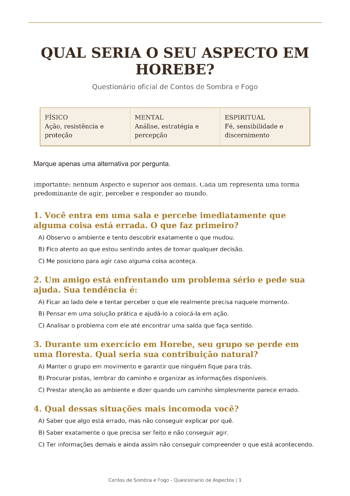

Contos de Sombra e Fogo · experiência oficial
Qual seria o seu Aspecto em Horebe?
São 12 escolhas entre ação, estratégia e discernimento. Marque uma alternativa por pergunta e guarde suas respostas.
Questionário públicoO arquivo abaixo contém somente as perguntas. O gabarito e as regras de resultado permanecem reservados pelo autor.
